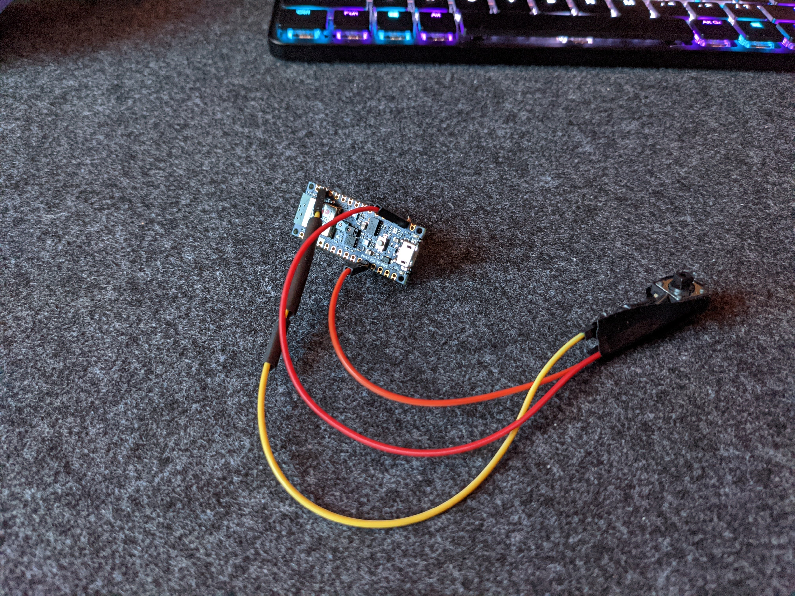
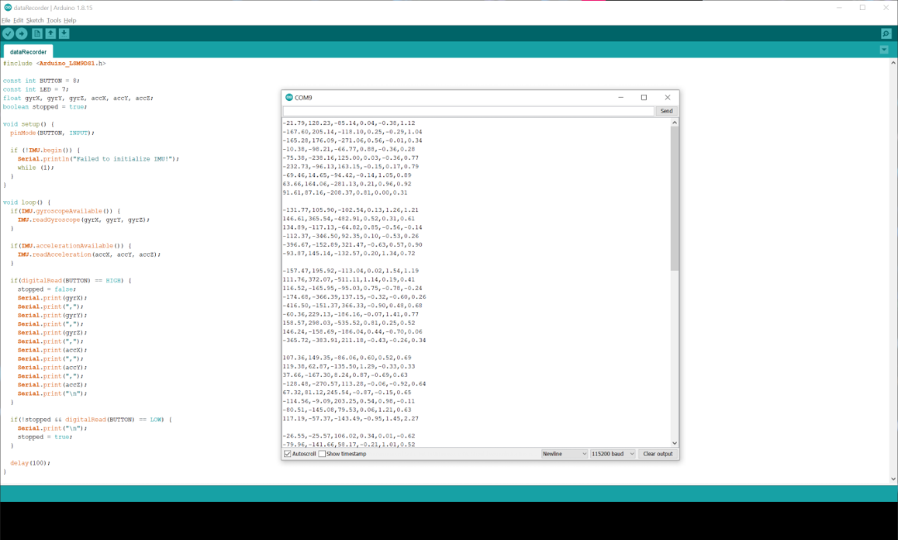

The Magic Hand
For some time, I’ve been tinkering with DIY Wi-Fi-controlled lights,
infatuated with the laziness they cause in the coolest way possible.
I’ve flashed cheap Chinese switches with new firmware, set up a smart
home hub on my Raspberry Pi, and coded my own animations on individually
addressable LEDs. Using Alexa to control my many devices is very
convenient, but I wanted something cooler, something that felt a little
more futuristic. The Magic Hand allows me to control the lights in my
room with waves of my hand, making me feel like I’m in a Science-Fiction
movie. This project allowed me to experiment with AI outside of my studies,
applying it to achieve a personal goal. I am extremely interested in data
science, so it was only logical to make an entire project out of it. I
coded the microcontroller, trained the recurrent neural network, and
loaded it onto said microcontroller, and received some help from a friend,
Miles Oquendo, in designing the battery management system to make the
device cordless. A lot went into this project, and the final product shows it.

I was able to compile a wide range of my skills for this project: my background
in coding with an object-oriented mindset to organize the many functions of
the device, my experience parsing data into a more useful form to take in
data for training, as well as my knowledge of machine learning to structure
data and use a neural network to yield an accurate classification of each
gesture. I was able to identify a problem that could utilize AI and applied
it to create a robust solution. When getting into the project, I wasn’t sure
where to start.

I had never used TensorFlow, nor had I loaded an AI model onto an Arduino
via TensorFlow Lite. I hadn’t ever sent or received custom messages over
Bluetooth. I had never had to think about power consumption on a battery-powered
device. My work was cut out for me. Through this project, I was able to dive
into these topics with the help of many google searches, official
documentation, and YouTube tutorials. I now know how to use TensorFlow, an
AI library I will be using for many years to come. I also gained valuable
experience combining many complex concepts and methods into one program and
product, a pattern used in all parts of the tech industry that I’ve had little
prior experience in. Now that I have struggled through one AI-hardware project,
I now know how not to initially set up my code. I’m sure I will create cool
projects like this in the future, and the organization, readability, and
documentation of those projects will be much better than this one. Now that I
know what components need to be present for a project like this, I can better
plan for them in my next project.